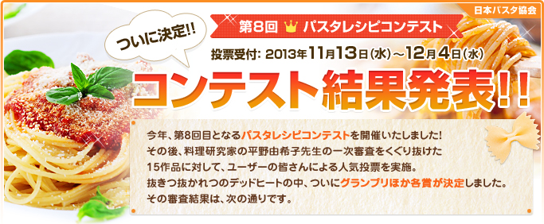
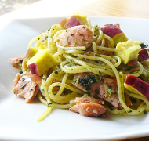
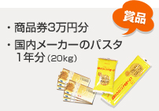
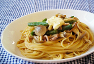
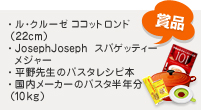
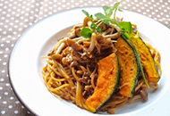
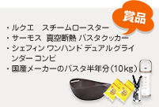
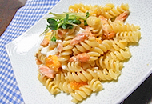
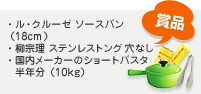

- 10月1日（火）〜10月24日（木）
- 最終審査に残る作品を各部門5つ選出します。計15作品となります。
- 最終審査員はユーザーのみなさんです。最も得票数が多かったレシピがグランプリとなります。
- 12月中旬にサイト上で発表します。


- 紅葉パスタ〜伊勢志摩の香りをそえて〜
- 早百合’ｓ

- 秋鮭とさつまいもの秋満載のパスタです！

- 伊勢志摩の特産物「あおさのり」をパスタソースにしたアイディアが光っていました。磯の香りがパスタを新鮮な味わいにしてくれます。あおさのりが手に入らなければ、青のりやちぎった焼きのりを使ってみてもいいですね。鮭の塩気とさつまいもの甘味のバランスがよく、彩りも美しいひと皿です。
- 



- 塩辛とショウガの大人パスタ マイルドバター風味
- マル子
- 見た目より味で勝負！ビールがすすむおつまみパスタ
- パスタにアンチョビは定番の組み合わせですが、塩辛を使うことで、ひと味違う、大人の和風パスタに。ショウガの風味がアクセントになり、仕上げのバターでコクもアップ。ビールがすすむパスタですね。
- 


- 秋の味覚♪かぼちゃときのこのカレーパスタ
- かなみにぃ
- バター香る秋の食材と、濃厚なカレーとの相性抜群！
- カレールウを使って、パスタのソースをつくるアイディアは手軽で、子供から大人までみんなが喜ぶひと皿ですね。リッチな味わいのソースとかぼちゃ、きのこが好相性。ボリュームもたっぷりです。冬にはごぼうやれんこんなど根菜を使っても楽しめそうです。
- 


- サーモンと卵の和風カルボナーラ
- おほほ
- 塩麹を使った和風カルボナーラです
- カルボナーラに鮭がはいったごちそうパスタ。鮭とクリームソースの組み合わせは相性抜群ですが、鮭に塩麹を塗って焼いておいしさをアップ。生卵ではなく、半熟卵を使ってからめることで、失敗知らずのひと味違ソースに。和風のテイストが入ることで、飽きないおいしさになっています。
- 

どのレシピもアイディア溢れるレベルの高いレシピばかりで、審査をするのがひと苦労でした。季節の野菜やご当地ならではの素材を使ったものなど、オリジナリティ豊かなものも多く寄せられました。
そのバリエーションの豊かさに、どんな素材や調味料でもパスタの素材になり得るということを審査しながら、再発見させていただきました。
家庭の数だけオリジナルなパスタがある、といっても過言ではないかもしれません。みなさんのアイディアに脱帽です。


-
パスタ1ヵ月分
（1.5キロ） -
平野由希子の
ベストパスタ101